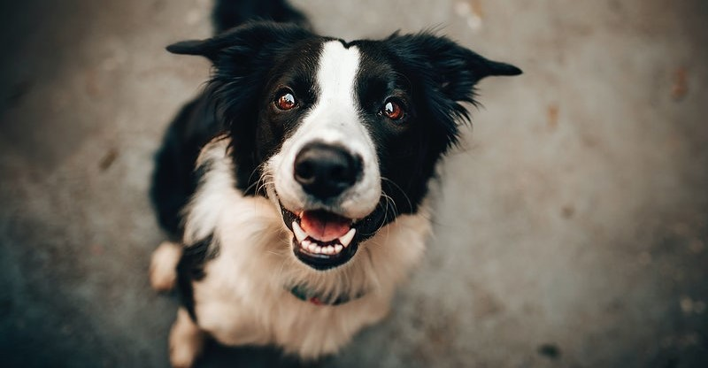

O isolamento social é uma das principais recomendações para conter o avanço do novo coronavírus. Mesmo os tutores seguindo a orientação, animais de estimação têm a necessidade de gastar energia e, por vezes, de passear em algum momento do dia. Segundo o veterinário Anderson Ramos, a atividade não está proibida, mas demanda atenção e alguns cuidados.
"Quanto menor a exposição do tutor e do animal, o passeio é mais seguro. Os animais que não conseguem fazer as necessidades em casa, devem fazer o menor percurso possível", disse o veterinário.
"Segundo a Organização Mundial de Saúde (OMS), não há nada sobre uma transmissão de coronavírus a partir dos animais. Embora eles não peguem a doença, podem servir de via ao levar o vírus para dentro de casa", explicou o veterinário.
De acordo com o professor do curso de Medicina Veterinária da Universidade Federal da Fronteira (UFFS) – Campus Realeza, Iucif Nascif Junior, que atua na área de saúde pública e epidemiologia, essa é uma dúvida que vem crescendo, porém não é motivo de temor, tomando-se certos cuidados.
Não há evidências que comprovem que os animais possam ser acometidos pelo COVID-19, conforme explica Nascif Junior: “De maneira geral, cada espécie animal têm o seu tipo de coronavírus, mas que causam doenças específicas. Então, existe coronavírus em cães, em gatos, em aves, mas elas não são transmitidas para humanos, assim como este vírus que está causando a pandemia não é transmitido para os animais”, detalhou.
Outro ponto importante levando por Nascif Junior, é o abandono de animais por conta do medo e da desinformação. “Como já foi dito, o COVID-19 acomete apenas os humanos e não há problema de transmissão aos animais, porém o abando gera dois grandes problemas: o primeiro de ordem jurídica, pois abando é considerado crime de maus tratos; o segundo é que quanto mais animais soltos na rua, mais podemos ter problemas como mordedura, acidente de trânsito e risco de zoonoses. Não há necessidade nenhuma de abandono”, reforçou.
Dicas

- Pessoas que já contraíram o coronavírus devem evitar o contato com os animais, já que não há dados precisos sobre a infecção em pets
- Evite passear com os animais em lugares de grande circulação de pessoas
- Evite beijar, receber lambidas ou compartilhar comida com o animal
- As pessoas que não estão infectadas podem conviver normalmente com os animais.
- Ter um animal em casa é uma maneira de interagir e tirar um pouco a pessoa desse estado de morbidade, negatividade, medo e pânico. Pode fazer um carinho, propor um convívio social
Referências
“20 cuidados com seu pet que você precisa ter para prevenir o COVID-19” Link: Estado De Minas Saude
“Professor do Campus Realeza explica sobre os cuidados com os animais durante a pandemia de COVID-19” Link: UFFS.edu
“Saiba quais cuidados tomar com os bichos de estimação em tempos de pandemia” Link: G1.Globo